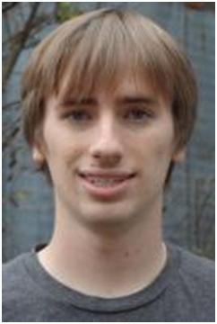

 Marshall Shepherd graduated from UVM in December of 2012 with dual degrees; a BA in Computer Science and a BS in Business Administration. Despite this challenging dual major, he made the Dean's List every year at UVM. In December 2012, Marshall was inducted into Phi Beta Kappa, the oldest and perhaps the most prestigious honorary society in the United States, which recognizes outstanding performance in the liberal arts and sciences. In general, students elected to membership in Phi Beta Kappa are seniors who have demonstrated academic excellence (with a GPA of 3.6 or higher) in challenging courses across a wide range of fields in the liberal arts, including mathematics, humanities, natural sciences, social sciences, fine arts, foreign language, and literature. It is impressive that Marshall Shepherd not only embraced a broad liberal arts education while simultaneously double-majoring in Computer Science and Business Administration, but also managed to graduate a semester early!"
Since his sophomore year, Marshall has worked part time at a local software company in Alburgh, VT, called Prompt Incorporated. Prompt, Inc. is a family run business that sells specialty Human Resource and Compensation planning software; upon graduation, he accepted a full time position there. In addition to working full time, he is now also a part-time student in UVM's MBA program.
Marshall originally applied to UVM into its Business Program, but quickly fell in love with Computer Science after taking a web design class with Bob Erickson and added a BA in CS as his second major.
"I absolutely loved the CS program at UVM. Although I was a BA in CS, so I didn't have the strong engineering background that many of my peers did, I never felt behind. By far the best part of the CS major is the wonderful, bright, and passionate professors that teach our classes. Having taken classes in many different disciplines, I can say that the CS department has by far one of the strongest teaching groups. The CS department's wonderful faculty, assisted by the student led CS Crew, really makes UVM a fun, welcoming, and unique place to learn Computer Science."